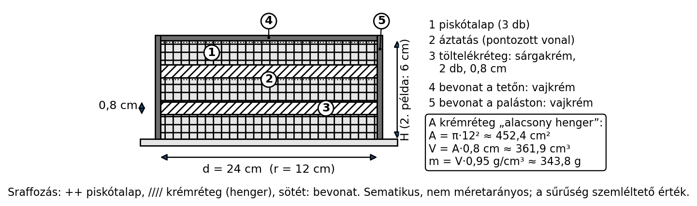

Az előző alfejezetekben megismerted a Veszteség- és tömegnövekedés-számítás, a Tejszínkrémek, bavarois, mousse és ganache-krémek, a Vajkrémek: főzött, tojássárgás, habcsókos vajkrém és a Sós töltelékek és a töltelékkészítés balesetvédelme alfejezetek tartalmát. Ebben az összefoglaló számítási alfejezetben a töltelékek anyaghányad-számítását és a krémek élelmiszerbiztonsági rendszerét kapcsoljuk össze.
Esküvői tortát készítesz. A rendelés szerint 24 cm átmérőjű, három piskótalapból álló torta készül, két rétegben sárgakrémmel, kívül vajkrémmel. A műhelyben a sárgakrémből 1,2 kg van, a vajkrémből 800 g. Elég lesz-e? Ha túl keveset készítesz, a torta üreges lesz; ha túl sokat, a maradék krém hűtve tárolható ugyan, de a felesleg költség, és a tárolás közben is minőségi és élelmiszerbiztonsági kockázatot hordoz. A pontos anyaghányad-számítás tehát nemcsak gazdaságossági kérdés, hanem a vendég elégedettségének és a biztonságos termék előállításának alapfeltétele is.
A metszeten látszik, melyik réteghez melyik méret tartozik: a belső krémréteg a torta felületével és a réteg vastagságával számolható „alacsony henger”, a bevonathoz a tető és a palást felülete kell.

Képzeld el, hogy a torta töltelékrétege egy olyan henger, amelynek alapterülete a torta felülete, magassága pedig a krémréteg vastagsága. Egy 24 cm átmérőjű torta sugara 12 cm, így a felülete:
Ha 0,8 cm vastag sárgakrémet kenünk rá, akkor a réteg térfogata:
ami milliliterben is ennyi: . Ha a sárgakrém sűrűsége 0,95 g/cm³, akkor a szükséges krém tömege:
Ez a szám lesz a további számítások kiindulópontja.
Definíció. A töltelékigény az a kész krémmennyiség, amelyet a sütemény vagy torta rétegei közé, illetve a felület díszítésére tervezünk. Mértékegysége tömeg (g vagy kg). A töltelékigényt a felület, a rétegvastagság és a krém sűrűségének szorzataként számítjuk.
Összefüggés. A töltelék tömege:
ahol:
A felület számítása a forma alakjától függ:
Megjegyzés. A krémek sűrűsége függ a típusuktól és a habosítottságtól. A sárgakrém sűrűsége körülbelül 0,90–1,05 g/cm³, a vajkrémé 0,80–0,95 g/cm³, a tejszínhabos krémé 0,45–0,65 g/cm³. Ezek szemléltető értékek; a pontos sűrűséget mindig az adott receptúrán és üzemi mérésen kell meghatározni (ellenőrizendő: saját mérés, gyártói adatlap).
A HTML-kiadás kalkulátorában a forma (kör vagy téglalap), a méretek, a belső rétegek száma és vastagsága, a bevonat, a krémtípus és a veszteség állítható; a számítás lépései behelyettesítve jelennek meg, így a lenti példák (343,8 g; 2533 g; 863 g) és a feladatok ellenőrizhetők. A nyomtatott ábra a 2. példa kitöltött számítását mutatja.
A főzött krémek – például a sárgakrém – készítésekor a víz egy része elpárolog, ezért a kész krém tömege kisebb, mint a betett nyersanyagok összes tömege. Ezt a Veszteség- és tömegnövekedés-számítás alfejezet szabályai szerint főzési vagy bepárlási veszteségnek nevezzük, és a bruttó (főzés előtti) tömegre vonatkoztatjuk.
Szabály. A főzési veszteséggel csökkentett nettó tömeg:
a szükséges bruttó (nyersanyag) tömeg pedig:
A a főzési veszteség százalékban. A veszteség értéke receptúrától, főzési időtől és hőfoktól függ; sárgakrémnél a gyakorlatban 8–15% közötti bepárlási veszteséggel számolhatunk (ellenőrizendő: üzemi technológiai utasítás, receptúra).
Példa. 2,0 kg (2000 g) kész sárgakrémre van szükség, és a receptúra szerint a főzési veszteség 10%. A főzés előtti bruttó tömeg:
Tehát körülbelül 2,222 kg nyersanyagot kell bemérni ahhoz, hogy 2,0 kg kész krémet kapjunk.
A tejszínkrémeknél és a habosított vajkrémeknél a krémbe levegőt dolgozunk, ezért a térfogata nő, de a tömege gyakorlatilag nem változik. A térfogatnövekedést overrun-nak nevezzük.
Összefüggés. A hab térfogata a folyadék térfogatához képest:
ahol az overrun százalékban. A hab sűrűsége:
A tömeg nem nő, tehát (a hozzáadott cukor és ízesítők kis tömegnövekedést adnak, amit a receptúrában figyelembe veszünk).
Példa. 500 g, 35% zsírtartalmú habtejszínt verünk fel. A tejszín sűrűsége folyadék állapotban körülbelül 0,95 g/cm³ (ellenőrizendő: gyártói adat). A folyadék térfogata:
Ha az overrun 80%, akkor a hab térfogata:
A hab sűrűsége:
Ha egy tortába 360 cm³ tejszínhabos krémet kell tölteni, akkor annak tömege:
Tehát ehhez a réteghez körülbelül 190 g kész hab kell, amihez 500 g tejszínből kiindulva arányosan kevesebb alapanyag szükséges, mert a habosítás a térfogatot növeli, nem a tömeget.
Adott: egy 60 × 40 cm-es tepsi, amelybe két piskótalap közé 1,0 cm vastag sárgakrémet töltünk. A krém sűrűsége 0,95 g/cm³. A főzési veszteség 10%.
Számítás. A tepsi felülete:
A töltelék térfogata:
A szükséges kész krém tömege:
A főzés előtti bruttó tömeg:
Tehát a tepsi megtöltéséhez körülbelül 2,53 kg sárgakrém nyersanyagot kell főzni.
Adott: 24 cm átmérőjű torta, két rétegben 0,8 cm vastag vajkrémet töltünk, és a torta külsejét is bevonjuk 0,3 cm vastagon. A vajkrém sűrűsége 0,85 g/cm³, a készítési veszteség (keverőtálban, eszközön maradó) 2%.
Számítás. A torta felülete:
A két belső réteg térfogata összesen:
A külső bevonathoz a torta oldalát és tetejét közelítőleg hengerpalástként számítjuk. A torta magassága legyen például 6 cm, az oldalfelület:
a teteje pedig 452,4 cm². A külső bevonat térfogata:
A teljes vajkrémigény térfogata:
A kész krém tömege:
A 2% veszteséggel a bruttó szükséglet:
Tehát körülbelül 863 g vajkrém-nyersanyagot kell összeállítani.
A motiváció kérdésére a válasz: a bevezető tortájához két réteg sárgakrém kb. , a vajkrém kb. 860 g kell. Az 1,2 kg sárgakrém tehát bőven elég, a 800 g vajkrém viszont nem.
Adott: 30 cm × 20 cm-es csokoládétorta tetejére 1,5 cm vastag tejszínhabos krémet készítünk. A hab overrunja 80%, a tejszín folyadék sűrűsége 0,95 g/cm³ (a porcukrot a folyadék részeként, ezzel a sűrűséggel közelítjük); a krémhez a tejszín tömegének 5%-a porcukor.
Számítás. A felület , a térfogat . A hab sűrűsége az overrunból:
A kész hab tömege (a porcukorral együtt):
A porcukor a tejszín tömegének 5%-a, tehát :
Ellenőrzés: ; a hab térfogata .
Tehát a tetejére körülbelül 452 g tejszínt és 23 g porcukrot kell felverni.
A krémek – különösen a tojásos, tejes és tejszínes krémek – súlyos élelmiszerbiztonsági kockázatot rejtenek, mert kiváló táptalajt adnak a kórokozó baktériumoknak. A HACCP-rendszerben ezért a krémkészítés minden lépését elemeznünk kell. Az alábbiakban a krémek jellemző kritikus szabályozási pontjait (CCP) foglaljuk táblázatba. Az értékek tanulási példák, nem hatósági előírások.
Jogszabály. Az élelmiszer-higiéniai követelményeket a 852/2004/EK rendelet és a magyar élelmiszerlánc-törvény, valamint a NÉBIH útmutatói határozzák meg. A hőmérsékleti határértékek és időtartamok egy részét a gyártói adatlapok és a technológiai utasítások pontosítják. Minden számszerű értéket ellenőrizni kell (ellenőrizendő: hatályos előírások, NÉBIH-útmutató, gyártói adatlap).
HACCP-táblázat. A krémkészítés jellemző lépései:
| Lépés | Veszély | Megelőzés | Kritikus határ (tanulási) | Monitorozás | Helyesbítő tevékenység | Dokumentum |
|---|---|---|---|---|---|---|
| Tej, tojás átvétele | mikrobás szennyeződés, törött tojás | beszállító értékelés, hőmérséklet-ellenőrzés, tojás szemrevételezése | tej ≤ 5 °C, tojás friss, sértetlen (ellenőrizendő) | átvételkor hőmérő, szemrevételezés | visszautasítás, eltérő tétel elkülönítése | átvételi napló |
| Sárgakrém hőkezelése | Salmonella, Bacillus cereus spóra túlélése | folyamatos keverés, megfelelő maghőmérséklet és idő | forrás (≥ 95 °C maghőmérséklet), forrástól 2–5 perc lassú forralás (tanulási példa, ellenőrizendő; lásd Tojáskrémek I: főzött sárgakrém és vaníliakrém) | digitális maghőmérő, konyhai időzítő | tovább főzés, szükség szerint újramelegítés | hőkezelési napló |
| Gyors hűtés | spórák csírázása, baktériumok szaporodása | krém gyors lehűtése jégfürdőn, sekély rétegben, keveréssel | 60 °C-ról 20 °C-ra legfeljebb 2 óra, majd 5 °C alá további legfeljebb 4 óra (tanulási példa, ellenőrizendő) | hőmérő, óra, keverés közbeni mérés | jégfürdő megerősítése, sokkoló használata, újra hűtés | hűtési napló |
| Hűtött tárolás | Listeria monocytogenes, romlás | hűtő 5 °C alatt, jelölt felhasználhatósági idő, zárható edény | ≤ 5 °C, sárgakrém 24–48 h, tejszínhabos krém 24 h (tanulási példa, ellenőrizendő) | hűtőhőmérő, napi ellenőrzés, címke | hőmérséklet javítása, lejárt krém selejtezése | hűtőnapló |
| Habosítás, vajkrém készítés | keresztszennyeződés, allergén áthordás | allergén elkülönítés, tiszta eszköz, kesztyű, hajháló | nincs idegen nyersanyag, allergén nyomok nem kimutathatók (ellenőrizendő) | szemrevételezés, eszköz ellenőrzése | eszközcsere, tisztítás, tétel újraértékelése | termelési lap |
| Töltés, expedíció | hűtési lánc megszakadása, hőmérséklet-emelkedés | hűtött szállítás, előhűtött doboz, gyors kiadás | szállítás ≤ 5 °C, kiadás 30 percen belül (ellenőrizendő) | hőmérő, időmérés | áru visszatartás, hűtőbe helyezés, leselejtezés | szállítási jegyzőkönyv |
Kritikus pont. A sárgakrém hőkezelése, a gyors hűtés és a hűtött tárolás jellemzően CCP; a habosítás és töltés inkább a jó higiéniai gyakorlat (GHP) keretébe tartozik, de allergénkezelés szempontjából ugyanúgy ellenőrizni kell.
Ebben az alfejezetben nem készítünk konkrét krémet, de a fenti számításokat a termelés során mindig el kell végezni. A következő lépéssort kövesd:
Biztonsági korlát. A krémkészítéshez használt gépek (habverő, krémfőző, sokkoló) működés közben benyúlva nem üzemeltethetők; tisztítás előtt mindig áramtalaníts. A forró sárgakrém kézre, arcra fröccsenhet – védőkesztyű és hosszú nyelű eszköz szükséges.
A töltelékek mennyiségét és minőségét a következő jellemzők alapján ellenőrizzük:
Egy cukrászüzembe esküvői torta rendelése érkezik: 3 emeletes, alul 28 cm-es, sárgakrémes, kívül vajkrémes torta. A műszakvezető kiszámolja, hogy a 28 cm-es tortához 1,5 kg sárgakrém kell a két rétegbe, és 0,9 kg vajkrém a bevonáshoz. A sárgakrém receptúrája 1,0 kg kész krémre ad meg 1,1 kg bruttó anyagot (kb. 9% főzési veszteség). A vezető 1,5 kg nettóhoz 1,5 × 1,1 = 1,65 kg nyersanyagot mér be. A főzést és a gyors hűtést a HACCP szerint dokumentálja. A kész krémből a mérés szerint 1,48 kg lesz, ami a tervezett 1,5 kg-hoz képest elfogadható. A hűtőben 4 °C-on tárolja. Az átadáskor a hőmérő 5 °C alatti értéket mutat. A vendég elégedett, a hatósági ellenőrzés a naplókat rendben találja. A tanulság: a pontos anyaghányad-számítás és a fegyelmezett hűtési gyakorlat együtt védi a vendéget és a vállalkozást.
1. feladat (A). Számítsd ki a 26 cm átmérőjű torta 0,7 cm vastag sárgakrém-rétegének tömegét, ha a krém sűrűsége 0,92 g/cm³.
2. feladat (A). Számítsd ki a 60 × 40 cm-es tepsi töltelékigényét, ha a vajkrém vastagsága 1,2 cm, sűrűsége 0,85 g/cm³.
3. feladat (B). 1,8 kg kész sárgakrémet kell készíteni. A főzési veszteség 12%. Mennyi a bruttó nyersanyagigény? A receptúra 1,0 kg bruttó tömegre: tej 700 g, tojássárgája 150 g, cukor 100 g, keményítő 30 g, vaníliás cukor 20 g (összesen 1 000 g). Számítsd ki az egyes alapanyagok mennyiségét.
4. feladat (B). 24 cm-es torta külsejét 0,4 cm vastagon vajkrémmel vonjuk be. A torta magassága 5 cm. A vajkrém sűrűsége 0,88 g/cm³, a készítési veszteség 3%. Mennyi vajkrémet kell készíteni?
5. feladat (C). Egy tejszínhabos krém receptje: 500 g habtejszín (35%), 30 g porcukor. A tejszín folyadék sűrűsége 0,95 g/cm³, az overrun 70%. Mekkora a kész hab térfogata és sűrűsége? Hány cm³ habbal lehet megtölteni egy 300 cm³-es formát? (A porcukor tömege elhanyagolható a hab tömegénél.)
6. feladat (D). Készítsd el a saját tanulókonyhádban (vagy rajzold le) a krémkészítés HACCP-táblázatát, és egészítsd ki a hiányzó kritikus határokat, monitorozási módszereket és helyesbítő tevékenységeket. Értékelési szempontok: legalább 3 CCP, minden sorban kitöltött dokumentum, a határértékek mellett ellenőrzési jelzés.
Önellenőrzés – válaszok:
1. feladat (A). ; ; .
2. feladat (A). ; ; .
3. feladat (B). A bruttó igény: . A szorzószám az 1,0 kg-os recepthez képest: . Alapanyagok: - tej: - tojássárgája: - cukor: - keményítő: - vaníliás cukor:
Ellenőrzés: , ami egyezik a szükséges bruttó mennyiséggel.
4. feladat (B). A felület ; a teteje ; a bevonat teljes felülete . A térfogat ; a kész krém tömege ; a bruttó .
5. feladat (C). A folyadék térfogata ; a hab térfogata . A hab tömege kb. 500 g (a porcukorral 530 g, de elhanyagoljuk); sűrűsége . A 300 cm³-es forma megtöltéséhez hab kell; ez a teljes mennyiségnek (500 g) kb. -a, tehát a recept harmadából is elkészülne.
6. feladat (D). A megoldást a fenti HACCP-táblázat mintájára kell elkészíteni, legalább a hőkezelés, gyors hűtés, hűtött tárolás sorokkal. A dokumentumok oszlopban feltüntethető: hőkezelési napló, hűtési napló, hűtőnapló, termelési lap. A kritikus határoknál jelölni kell: „ellenőrizendő: hatályos útmutató”.
A töltelékek anyaghányad-számítása a töltelékigényből indul: a réteg felülete × vastagsága × sűrűsége adja a kész krém tömegét. A főzött krémeknél a bepárlási veszteséggel a kész tömegből bruttó nyersanyagigényt számítunk az képlettel. A habosítás térfogatnövekedést okoz overrun szerint, de a tömeg nem nő. A kidolgozott példák sárgakrémre, vajkrémre és tejszínhabos krémre mutatják a számítást. Az élelmiszerbiztonság szempontjából a krémeknél a hőkezelés, a gyors hűtés és a hűtött tárolás a kritikus szabályozási pontok; a hőmérsékletek (például forrás és 2–5 perc lassú forralás a sárgakrémnél, 5 °C alatti tárolás, 60 °C-ról 20 °C-ra 2 órán belüli hűtés) tanulási értékek, és ellenőrizendők; ugyanezeket a Tojáskrémek I: főzött sárgakrém és vaníliakrém alfejezet is használja. A számítást a torták és a krémes sütemények kalkulációjához használjuk fel.
Továbbvitt eredmény. A töltelékigény és a bruttó-nettó átszámítás a Kikészített sütemények és torták: jellemzők és tortakészítési műveletek és a Krémes és tejszínes sütemények anyaghányad-számítása és higiéniája alfejezetekben szükséges a teljes termékkalkulációhoz.
A szöveg a következő forrástípusokra támaszkodik: cukrászati szakkönyvek (Magyarországon használt tankönyvek, cukrászipari technológiai jegyzetek), a 852/2004/EK rendelet és a magyar élelmiszerlánc-törvény előírásai, NÉBIH-útmutatók, gyártói adatlapok. A hőmérsékleti határértékek, a veszteségszázalékok és a sűrűségértékek tájékoztató jellegűek; ezeket az üzemi technológiai utasítás, a NÉBIH aktuális útmutatója és a gyártói dokumentáció szerint kell ellenőrizni. Különösen ellenőrizendő: a sárgakrém hőkezelési hőmérséklete és ideje, a gyors hűtés időkorlátja, a hűtött tárolás hőmérséklete és a termékek maximális eltarthatósági ideje.